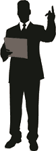

閒聊程式設計師與其它程式語言
本串內容純屬一己成見，其實不該列入「值得探討的議題」。
但與其他程式設計者閒聊，檢討他人經驗的得失，卻值得一試不是嗎？
所以，雖然接下來的話題可取之處不多，但不妨站在閒聊的角度，說說笑笑我對程式設計師與程式語言是怎樣的想法吧！
像朋友之間，不介意講些不正經的事，故意讓你吐槽一下，藉以活絡感情，本章節內容明明知道不該當作正式議題來討論，卻放上來讓你一邊吐槽、一邊提升我們共同身為程式設計者的情誼～
目錄
程式設計師
．Writer（作家）或 Programmer（節目製作人）
．程式設計師的工作
．程式語言嚴謹好還是便利好？
．每個人都該學習程式設計嗎？
．想以程式設計師為正職的建議
．程式設計的藝術：程式寫作
．架構師
．作廢的程式設計師
程式語言
．A、B、C 語言
．BASIC 語言比你想像的還要意義深遠，一點也不爛～
．Java 淪為工業規格
．Go
．Kotlin
．Node.js
．Perl
．計算機概論有其實用價值
．物件導向
我的歷程
．我學 Visual Basic 的情景
．我第一次用 Java 的情景
．我繼續用 Java 的原因，以及轉變…
．為什麼當初我學 Java 而不是 Python
．為什麼選 Python 時不選 Ruby
．我成為慣用 JavaScript 如母語的程式設計者
．退化了！我用 PHP 寫程式～
．我也討厭 Java 了嗎？
．我喜歡 Python 嗎？
．從不屑 C#，到後來使用它～
．我不能再自稱 Java 程式設計師了
．就像我從小愛打紅白機卻沒破過魂斗羅，我開發軟體到現在也沒精通過 Git。
．我學習電腦的青春黃金歲月
．Hello, world!
其他
Writer（作家）或 Programmer（節目製作人）
程式設計師常常認為自己像作家，我倒覺得正如 program 字面上的意義，是安排節目的製作人！
programmer 像編劇兼製作人，必須安排燈光師、攝影師、收音師、音效設計、美術指導、服裝造型設計師、剪接師、後製…等各領域人員，憑借他們發揮各自個本事，為演員（使用者）準備好表現的舞台，來完成一個單元的節目，好呈報給高層主管（老闆）驗收。
光憑自己不可能有天大的本領完成任務，因為自己所掌握的專業，只是整個任務裡的一環而已。所以 programmer 其實工作起來，都是在協同整個團隊為一個平台。如何有默契地溝通，讓每個專業領域的人才，實現你真正想要的事，變得整個工作的重點。
程式設計師的工作
程式設計師就職的公司，不一定就是開發軟體或承包案件賣出去賺錢的，還有為公司增加或修改內部系統的程式碼，好幫助企業的作業電腦化，寫的程式只有公司自己使用。
無論哪一種，公司的心態，都是付你薪水，就覺得對你有所交代，賺大錢了不會當你是功臣。寫出來的東西，畢竟不是你一個人寫的，而是大夥兒寫的，所以著作權是付錢請人幫忙寫出來的公司，不會是你個人。
即使不從事程式設計的工作，利用下班時間寫程式，看是將軟體分享出來，還是將原始碼開放出來，也能稱為程式設計師。下班兼差也是工作啊！
就從事電腦工作而言，只會寫程式的程式設計師，不需要覺得自己從事的工作高人一等，能組織團隊控制專案進度的軟體工程師（賣軟體的）或系統工程師（包案件的），才是進一步幫助公司降低成本的人才。
即使稱得上軟體工程師了，也不需要覺得自己了不起，真正厲害的是電腦工程師，設計的是一套電腦硬體系統，寫程式來驅動機器只是清粥小菜，根本不當會寫程式是一回事。這才是電腦工作中最高級的專業！你能為兩台不同機器寫程式用 RS-232 線傳輸資料嗎？你能測機器訊號，就知道該怎樣設計出 Wi-Fi 轉接器，讓 CNC 工床能用無線網路互傳資料嗎？系統工程師只能幫助商業解決問題，電腦工程師能幫助工業解決問題！
但我並不是要你成為軟體工程師或電腦工程師，程式設計師就是很棒的職業了！我只是有這樣一個認知：「程式設計師是很市井小民的工作，和大家一起享受工作、享受家庭、享受生活！沒什麼比這更快樂的事！」自抬身價是程式設計師不該有的心態，會讓你的工作越做越不開心。
程式語言嚴謹好還是便利好？
其實不用管怎樣的程式語言好，因為程式設計師就是碼農，在公司裡只是勞工的一種，而不是英雄。程式設計師在公司的地位，就像電玩遊戲的 NPC 一樣，你拿什麼武器其實沒有差別，因為你不是決定這遊戲通關進度的玩家，你只是站在旁邊等玩家過來的 NPC。所以程式語言該寫得嚴謹？還是選便利的來用？我過去在學程式設計時，也很關心這議題，但實際工作時，選擇權並不在你，你的工作是無論公司覺得嚴謹好還是便利好，乖乖照他們的意思去配合就好了，你不需要在這方面有什麼堅持。
所以程式語言嚴謹好還是便利好？告訴你：程式語言唬弄好！程式設計師真正該關心的議題是：「能騙多少稿費就賺多少稿費！」如果你能這樣實際做事，反而會真正做好程式設計該做的事。盡早學會看場合做事，對公司來說才符合有所表現的標準，而不是扮演英雄，表現得盡善盡美，自許為人才、菁英，搶走上層的風采。至於這為什麼要學？因為公司、老闆、上層一定對你說好好表現，實際上只是在說漂亮話，說的是這一套，做的是另一套。
為什麼？其實，對自己期望高、一出錯就自責、希望自己當個盡善盡美不被批評的人，這叫草莓族。抱著騙稿費心態賺稿費的人，反而正扮演好社會人士的角色！因為要不要讓你賺稿費，自有對方專業判斷，整個社會始終都在衡量缺失、包容你我的不是，並不特別需要盡善盡美的人。公司並不怕你犯錯，因為每個人犯點錯，早就在公司控制的成本內，甚至公司早就當自己是天天 24 小時營運的超商，從沒想過要讓員工天天朝九晚五。
自許為盡善盡美不容批評的人，對社會來說反而是「沒有討價還價空間」的人，難搞得要死，根本就不是人才。你不會是從頭錯到尾拖累公司的蠢材就夠了，但也不要當個盡善盡美到讓公司覺得你很難搞的人才，鋒芒畢露，最後成了項羽眼中的范增，找機會把你踢出去。
每個人都該學習程式設計嗎？
當然！但不是為了成為程式設計師，而是為了提升操控電腦的能力。
越來越多國家認為，每個人都應該會寫程式，基本教育必須包含程式設計的課程。
這我同意！如果每個人下載了「按鍵精靈」之類的軟體，都能自己寫程式讓按鍵與滑鼠完全照你的意思來跑，而不是只能等別人寫程式來下載套用，這對提高電腦使用效率有很大幫助！
但並不是要求每個學習程式設計的人，未來都得變成軟體研發的人才，而是希望他懂得使用程式語言命令電腦為自己做更多事情。我們要知道，會寫程式，跟會開發軟體、研發系統、制定框架…是兩回事。
有了懂得用「按鍵精靈」敲寫簡單 BASIC 程式的基礎，因此覺得自己對這方面很感興趣，到了高中職再投入軟體研發的領域深造，不是美事一樁嗎？
電腦使用者的能力正在退化，越來越不懂得控制電腦，反而讓電腦給控制了。
過去 Apple II 或小教授時代，作業系統的主要工作是驅動硬體裝置，幾乎沒提供什麼功能，必須靠電腦內建的 BASIC 語言，自行設計功能來用。當時的電腦使用者很多都知道怎樣用 BASIC 語言讓電腦做更多自動化處理的工作，這群人後來「進可攻、退可守」，對軟體有興趣就投入開發的行列，沒興趣的，後來往往扮演能夠從技術面幫助 Windows 時代一堆只知道拖曳圖示的人解決問題。
電腦越方便的同時，使用者技術能力降低，反而越不便。因此我同意每個人至少都能像 Apple II 時代懂得敲些簡單的 BASIC 語言讓電腦工作，所以基本教育應該包含程式語言的課程，提升國民操作電腦的能力。而且這樣的課程一點也不難，要求每個人會用 dim、if、select、for、while 控制一些電腦執行流程，並不是什麼天方夜譚的事[1]～
只是「程式設計不等於軟體開發」，因此推動這項政策的人，應該釐清是為了提升國民使用電腦工作的效率，而不是唬弄他們未來可以走研發軟體的路線。因為開發軟體很大部份是專案管理的問題，不只是工程技術的問題，甚至「會開發軟體的人不見得擅長寫程式」。
如果想要的是提升國民在軟體市場的競爭力，國家應該推動的是「團隊協同工作」，不但能迅速組織或融入一個團隊，還能彼此在職責上互相替換也無礙的地步[2]，才有機會領先其他國家，成為國民具備世界第一 App 研發戰力水準的新經濟型態國家。
想以程式設計師為正職的建議
我的看法
21 世紀 10 年代後期，程式設計師不再是越資深越受公司重視的職業，開始像體育選手一樣，到了 40 歲公司就覺得你不行、技術跟不上時代，把你辭退，找年輕人頂替。所以我不建議現在的人以程式設計師為職業，或者說不要再以程式設計師為技術底子深的專業，它真的就是一個電腦打字的行業，只管你會不會寫，不管你專不專業。
真的想靠程式設計師找工作謀生計的話，除非是 C 語言和組合語言為裝置寫程式，否則寫應用軟體或網站系統，你一定要不斷學會用當下最熱門的語言和框架，半吊子也沒關係，不能再像 20 世紀 90 年代那樣，只在特定一門語言專精到沒人比得上你。只要你不會用當下最熱門的技術開發軟體和系統，就很容易被公司視為戰力外，把你辭退，找半吊子的即戰力頂替。
這非常重要，所以再重複一次：「一定要不斷學習新的熱門語言或框架，只熟練單一語言變成權威是沒意義的。」所以未來程式設計師的專業，並不是你有多權威，而是你能否一次又一次地學會新的東西幫公司寫程式。新的東西學得半吊子也無妨，就是要學，千萬別在你擅長的語言冷門、落伍了，還在堅持自己是該語言的專家，以為自己很強。
還有一點也很重要，用 C 語言和組合語言為裝置寫程式例外，還是越熟練越吃香，一來這不是半吊子能做好的事，二來這領域也沒什麼新語言～
老手和新人
基本上對老練的程式設計師而言，學會用新的程式語言並不難，所以真被辭退了也不要氣餒，花一個月的時間學會大家想要的語言，再去新的公司應徵就好，你的資歷還是很值得信賴的武器。
只是這會是常態，要有心理準備，發生了不要大驚小怪，以為自己不行了、落伍了！趕快學起來就是了，半吊子也無妨，一直學、一直學、一直學…永無止盡地換新的下去，這就是未來程式設計師的工作處境，所以我先前才說：「不建議現在的人以程式設計師為職業。」要做這職業的話，就得知道這是必須不斷學新語言或框架的工作，你要具備不斷學會新東西的能力，否則 40 歲以後隨時都會被公司踢出去而失業。還有，這些新的東西只是過渡的，不到十年又會被淘汰，所以你千萬不要天真的以為這是你的優勢，學到的新東西都是暫時餬口飯吃用的。
但還在學習程式設計的人，請專注一門語言，一門精通了，你才能奠定快速學會新語言的專業。半吊子的新語言程式設計師，當他也 40 歲時還是半吊子，沒辦法快速學會新的語言，也會很快被辭退，所以精通還是必要的！
只是精通後不能停下來，精通只是為了奠定快速學會一個又一個新語言的能力，而不是精通後公司能讓你靠那個語言寫程式寫三十年…怎麼想天底下都沒這種事對吧？一個語言活三十年？所以程式設計師這工作，本來就是要換新語言的，過去就不少從 FORTRAN 到 C 到 Java 的人存在，只是未來換語言的速度會很快，快到你來不及變成專業，才半吊子，就又要學新的語言了。
十年風水轉
十幾二十年後，這種不斷換新語言然後大家都是半吊子的情況，在程式設計業界變成一種病態時，會有人試圖發明新的語言解決困境。
但在那之前，想當程式設計師的宿命，就是學、學、學，不要停下你的腳步。
但也不用過於擔心程式設計師變成很難的工作，不斷學會用新的語言幫公司寫程式，並不會比你專注單一語言變成權威困難。就像你不斷學會寫世界各國的字母，並不會比學單一國家的語法和文法困難一樣，沒什麼好怕的。
寫這篇建議，只是想告訴你未來可能是怎樣的發展和變化，知道了才能調整好心態，讓自己隨時都能幫公司寫程式工作。而不是明明付出那麼多努力、技術是那麼卓越了，卻不被公司需要踢了出去。
這不算走歪
其實新的語言大家都學得半吊子，但它能熱門起來，就是因為能更快完成工作，幫公司更快賺到錢。就像 Ruby on Rails 能以絕快的速度打造商務網站一樣，你用 Java 得花一個月時間打造的網站系統，人家 Ruby on Rails 七天就交差，誰管你精通 Java EE 的人比較專業，公司只管會寫 Ruby on Rails 的人比較能賺錢。
因此程式設計師不要再把專業放在技術上，而要放在績效上，績效就是這個行業未來的趨勢。甚至業績與實效，在未來有可能就是公司用來要求程式設計師的指標。
我在論壇看過很多 Java、C#、C++ 程式設計師在笑 Rails 的人，在做高難度的網站功能很快，但電腦工程和程式設計的基本概念往往不懂，而不屑去學 Rails，不想變成半吊子。
我是不覺得當半吊子的 Rails 程式設計師，比專業的中年失業男好笑就是了。在台灣，我有看過抓住 Ruby on Rails 能快速開發出網站的優勢，而創業不斷接案發大財的人，但沒看過專精 Java EE 而擺脫一輩子領那不上不下月薪的人。或許國外的 Java 程式設計師薪水還不錯，但你在台灣，不管學什麼語言，都是一般上班族的低薪。如果你還覺得 Rails 那樣的程式設計師很好笑，我建議你最好走電腦工程師的領域，千萬不要去軟體開發商當程式設計師，你十年後會被公司列為戰力外。這不是公司走歪，而是你沒發現公司需要的是什麼。
程式設計的藝術：程式寫作
程式設計是真的有「藝術」這檔事，而那種感覺就是寫程式變得像「寫作」一樣。你會讚嘆別人（還有自己）的表達能力竟然如此巧妙，然後像迷上「像素畫」一樣精進自我技術，追求美感的極致，甚至醉心於堆砌出一個程式的世界。

首先，程式也是一種語言，在有限的詞彙下，寫下對某一邏輯的描述。這邏輯其實也是你對於某事物的看法，只是將事物依性質與功能，拆解出邏輯後用程式語法表現出來。拆解的這段過程，有些人表達得很繁雜，有些人卻傳達得很典雅，所以寫程式不失為一種文筆的展現。
如何更直接、清楚、確實地傳達所想的邏輯內容，是程式寫作的議題。如果你寫出來的程式連自己看了都有種「文不對題」般不知所云的感覺，希望寫出來的程式能夠百分百將心思傳達給對方，那就是練習作文的時候了 XDDD
你可以從「可讀性」先下手，也就是讓人更容易看懂你的程式。例如明明數值直接套入算式即可，但為了提升可讀性，大多數選擇先將數值放入變數裡面再取出來用，因此這樣可以賦予數值一個名稱，好讓人看懂算式中這個數值代表甚麼意思。
接下來是「模組化」的手法，將繁贅的結構精銳化。一篇文章如果重複太多次同樣的句子，通常看了會很厭煩、乏味，程式寫作的關鍵就在這裡，如何將重複的東西透過「函式」來「具象化」，或者透過「物件導向」的「封裝、繼承、多型」來「抽象化」，都是讓程式寫作顯得典雅許多的關鍵。
架構師
我對這真的沒興趣，因為不是每個人都有榮幸可以擔任架構師，就像不是每個人都能當上部長一樣：「即使你真有那個能力，也不見得輪得到你當。」
雖然程式設計師地位低很多[1]，但我還是覺得寫程式要比架構值得推廣，只想把心思放在怎樣寫好程式、怎樣享受寫程式的生活，能當成一種休閒最好，而不是一種謀生用的在職技能。
程式設計可以當一種興趣來培養，而架構不是一種技術，而是一種組織與管理了！光自己一人，沒人可管、沒事可派，就玩不起來。而管人、管業務流程、管技術…這有什麼好玩的？就享受高高在上的身分地位，追逐職場上的尊榮。或許對大多數在職者來說這才是最想要的，但我不覺得那是人生不可或缺的一環，也就沒什麼好讓我探討與關注了～
每個人都能享受寫程式的樂趣，無論你是程式設計師、或者是業餘的愛好者，只要裝好程式語言，誰都能享受在電腦裡創造無限可能的樂趣，像作家透過寫作技巧描述一段又一段的感情和故事一樣，會有個無形的世界掌握在你手上。架構…那真的就是純屬菁英之間交耳的話題與內容。
作廢的程式設計師
「我不喜歡 Go 的語法，我絕對不會用它寫程式。」只要提到 Go 語言，我經常掛在嘴上講的就是這句。會講出這種話，就看得出為何我只是個半調子的程式設計師～
如果你跟我一樣，用語法來決定是否使用某個程式語言，而不是程式語言能帶來的好處，那你基本上跟我一樣：「廢掉了！」不管你再怎麼學程式設計的技術，頂多都只是個半調子而已，因為你搞錯程式設計的重點。就像整天在研究哪一國的語文最好用，而不是怎樣用各國的語言進行商業交易，結果人家成為貿易人才時，你跟我卻把重點放在如何講一口標準的英語。
正正當當的程式設計師，是不會挑剔語法的！只要能編譯出更高品質的程式（像 Go 的執行效率或 Rust 的記憶體管理能力）、只要能更快開發出想要的功能（像 PHP 設計動態網頁或 Python 應用資料科學）、只要能更完美設計出複雜的成品（像 Rails 開發網站應用程式或 Node.js 客製化網站伺服器），每一樣都會見獵心喜的喜歡上它。「語法？去適應就好了！」語法不過就是使用一個程式語言的規則而已，遵守就好，為什麼要把重點放在上面？不去受用每個程式語言所能帶來的好處！
接下來的章節，涉及的就是語法的喜好與否，看看就好，不要受影響！我希望你不要變得像我一樣，變成作廢的程式設計師。應該說，你可以喜歡或討厭一個程式語言的語法，但不要因此抗拒使用它。如果你會抗拒，那正走上我的路，將成為作廢的程式設計師…要有所警惕了。
A、B、C 語言
A 語言
1957 年，IBM 開發出第一款高階程式語言 FORTRAN。
1958 年，將 FORTRAN 視為美規產物、希望有自己歐規高階程式語言的 ACM (Association of Computing Machinery；計算機協會)，與 GAMM (Gesellschaft für Angewandte Mathematik und Mechanik；應用數學和力學協會) 共同制定一套基於數學演算法的高階程式語言 IAL (International Algebraic Language；國際代數語言），完成後命名為 ALGOL 58 (Algorithmic language 1958)，這是第一個 Procedural programming。
1960 年，加入程式區塊的概念，發表了 ALGOL 60，成為現代結構化程式語言的樣本，影響往後的 B 語言和 C 語言，而被稱為 A 語言。
B 語言
1963 年，劍橋大學數學研究所的 Christopher Strachey 基於 ALGOL 60，與倫敦大學電腦部門合作，實作出 Multi-paradigm 的 CPL（Cambridge Programming Language）。
1966 年，劍橋大學電腦實驗室的 Martin Richards 將 CPL 語言中對設備沒幫助的數學成分刪掉，精簡為 BCPL (Basic Combined Programming Language)。
1969 年，Ken Thompson 使用 BCPL 語言，開發出能在 UNIX 寫高階程式語言的編譯器，命名為 B 語言。（這已經不是改良了，B 語言是用 BCPL 語言寫出來的。）
C 語言
1972 年，為了方便移植 UNIX 到不同設備，Dennis Ritchie 將 B 語言改為能用來編寫整個 UNIX 作業系統的語言。由於是新版 B 語言，所以稱為 C 語言。
D 語言
1983 年，Bjarne Stroustrup 以 C 語言為基礎，加入物件導向程式設計的語法，發明了 C++。
2001 年，Walter Bright 基於對 C++ 的不良使用經驗，發明了 D 語言，但這意味著功能取捨端看個人喜好，而不是針對業界需求。
2007 年，Andrei Alexandrescu 加入，共同開發 D 語言，反而成為先進的物件導向程式語言。
E 語言
2000 年，吳濤發明了使用中文指令、模仿 Visual Basic 整合開發環境的 E 語言，意思取自「易」音與 Easy 開頭字母而來。
E 語言與上述語言毫無關聯。
BASIC 語言比你想像的還要意義深遠，一點也不爛～
進入 20 世紀 90 年代，隨著 486 等級電腦普及，已經承擔得起 C 編譯環境的建置，早已名震江湖的 C 語言盛行起來。Basic 因此被視為語法功能不強、執行效率不高的爛程式語言…
要學就學程式碼寫得更巧、程式跑得更順的 C 語言！
但是對經歷過 APPLE II 與 IBM PC 的人來說，BASIC 程式語言的意義卻非常深遠。
因為這些電腦都內建 BASIC 程式語言[1]，每個人就像現在或多或少會寫一些 MS-DOS 批次檔來處理檔案一樣，會以 BASIC 寫些程式讓電腦動作。
甚至不少人熱心到有空就以 BASIC 製作一些軟體與遊戲，然後將原始碼發表出來給大家輸入使用。
或許 APPLE II 與 IBM PC 跟 Richard Stallman 用的 UNIX 電腦是完全不同等級的「玩具」，但這個時代使用這些玩具的人，其實很能體會 Richard Stallman 畢生保護原始碼的分享是怎樣美好的事～
BASIC 是許多 APPLE II 與 IBM PC 電腦高度使用者，曾經投入學習的技術，而它基本上像批次檔一樣易學，只是東西更多，容易讓人一步接著一步學下去，總有為數不少擅長以 BASIC 邏輯思考來設計電腦做更多工作的進階使用者。
至於 BASIC 的語法功能不強，是因為比起靈活寫意的 C 語言來講過於死板。但後來認真檢討過去這段往事，倒也開始懷念其實是 BASIC 比 C 較接近「自然語言」一點，所以寫起來顯得囉嗦的關係。然而，當時較接近自然語言的 BASIC 也總是以「容易學習」為優點，成為每個踏入程式設計領域時普遍建議學習的第一個語言。
或許 BASIC 再也不如 C 和 Java，也不再成為大家推薦學習程式設計的第一個語言。但過往封存於美好年代的象徵意義，卻不是 C 和 Java 所能取代、甚至根本不能比擬的。
Java 淪為工業規格
Java 漸失民心的主要原因，就是它淪為某種企業級工程標準規格。
Java 的衰退
這幾年來，新興語言的熱度不曾降溫持續保持提升，相對之下 Java 就顯得衰退了。
然而這是一種「失去民心」的現象，也就是 Java 越來越不得「使用者」的青睞，但對企業界而言 Java 的地位卻越來越鞏固，因為 Java 需要專業團隊的維持，形成一種門檻來提升企業對外的競爭能力。
Python 或 Ruby 讓語法進化，提供靈活與方便的寫法讓沒有專業背景的「電腦使用者」能快速建置解決方案，而 Java 卻讓語法落後時代好幾年，只一味追加低階 API 的功能，就是最好的證明！
設下門檻
其實寫程式的有兩種人：「使用者 (User) 與工程師 (Engineer)。」
使用者是以程式語言為專長的人，會寫程式，但往往只能透過語言內建的功能來解決問題。工程師是以資訊工程為專長的人，對他而言程式語言不足以視為一種專業，如何打造整座電腦讓企業能以資訊化方式來營運，才是重點。
2000 年代開始，企業流行採用 Java 做為提升競爭力的技術，這些試圖發展資訊科技的企業，延聘 Java 開發團隊時，自然不會讓使用者程度的人加入，必須是工程師。這是可以理解的，因為企業開發的不是讓員工操作的應用軟體，而是一種專屬規格，屬於公司的一種體現，或者說是以資訊型態存在的公司，這不是使用者程度的人能做到的事。
至今，幫助企業以 Java 架構系統的工程師，以程式設計這行業來看就像菁英一樣的地位。這群菁英最不樂見的，就是「語言使用者」簡簡單單也能寫出「程式工程師」才能做的事，因此 Java 既為企業界熱門的項目，這群菁英就不會訴求 Java 成為一種使用者語言，繼續讓 Java 保持門檻，成為工程師語言。
於是我們發現，Java 與其說是程式語言，不如說是一種工業標準、一種企業專屬的規格。
優勢
這不是好壞的問題，如何從這現象當中為自己謀取最大利益才是重點。
如果你是使用者，Java 可以做的事將越來越不如其它新興語言，未來幾年 Java 的使用率將逐漸衰落，甚至在一般開發人員的心底會比 C++ 還不如，用博大精深的 Java 寫程式，還不如用 C++ 做事比較乾脆。
但如果你不甘只是個使用者，Java 可以讓你擠身企業菁英的行列。J2EE 加上要搭配好幾套 Framework 才足以彌補語法機制缺陷的 Java，絕對是所有程式語言裡最博大精深的技術與學問。資訊工程師通常都像博士一樣對學術有旺盛的探知企圖，這時 Java 是滿足你慾望、又同時能讓你非凡的選擇。
風險
需要控制的風險在於，一旦 Java 變得冷門，想降低成本的企業就會開始流行新興語言。當新興語言也能媲美 Java 對企業產生助益，Java 就不只衰退，而是衰亡了。
但這也不成風險，對 Java 資訊工程師來說，轉換到另一個新興語言並不難，甚至可以喘口氣用更快更有效率的手法來解決問題……然後繼續設下門檻，讓新的程式語言成為只有菁英才能發揮其價值的下一個艱奧語言。
Go
Go 帶來的省思
2007 年 9 月，Robert Griesemer、Rob Pike[1]、Ken Thompson[2] 著手設計新語言，他們重新檢視 21 世紀的程式設計需求，發現物件導向程式設計的缺失，以及腳本語言與動態型別在便利中反而有哪些不便，於是發明「Oberon 套件機制 + Alef 平行處理 + C 型別結構」的 Go 語言，做為提升新世代程式撰寫效率的語言。
2009 年 11 月，Google 實作出 Go 語言，並以開放原始碼專案釋出：
http://golang.org
Go 語言沒有繼承、沒有泛型、沒有例外，很多觀念都將衝擊學透 Java 程式設計的你，讓你突破物件導向程式設計困境，放下管理手法的一張嘴，重歸寫碼效率的一雙手，迎向新的未來～
所以我推薦學透 Java 的你，覺得自己反而受限於專業的物件導向管理手法時，下一步選擇 Go 語言試試看：「如果寫出程式碼的同時已保證品質，你還需要什麼管理程式碼的專案手法嗎？」
符合新時代需求的程式語言
然而，Go 語言並不是為了解決 Java 問題而來，Go 是解決 21 世紀 10 年代需求的語言，它將平行化程式設計納入語言核心，在 C 語言能編譯出高品質機械碼的基礎上，引進開發規範與編碼風格、系統資源回收、快速編譯等功能。使用 Go 語言，是為了比 C 語言更有效率地開發與編譯程式。
誰知道 21 世紀 30 年代的需求是什麼[3]，然後再出現新的語言滿足需求？
因此，就算 Java 程式語言不完美，Go 也不會是完美的程式語言，事實上對 Go 語言不以為然甚至反感的人很多。
但問題不在程式語言完美與否，而是你能否率先掌握 Go 語言，開創嶄新的世代！
快寫程式的話，Python 和 Ruby 依然是比 Go 更好的選擇，不需要換。
Python 語法精神像 C，指令很少，靠程式庫擴充功能，所以易學易用。Python 學一星期就能上手，用三個月就能掌握，Java 學一個月才能上手，用三年才能掌握。[4]
但 C 用「函式」來擴充程式庫，再怎麼擴充都是用來編譯機器碼的程式語言，Python 還有「模塊」，套用框架後變成另一種用途的語言，像是伺服端控制、深度學習，能輕鬆隨著時代的進步走下去。
而 Java 為了引進 JavaScript 部份功能，顯得包袱沉重像老邁的程式語言，但 Python 比 Java 早四年問世，卻顯得正值青壯且鴻運高照，因為 JavaScript 那些功能早就是 Python 的一部分。
Python 並不強制用物件導向寫程式[5]，它適用的編程手法很多，卻比 Java 有更高的可讀性，就算在 Windows 用沒有語法高亮度的記事本開啟 *.py，也能夠順利閱讀程式碼。所以沒有道理 Python 要向 Java 致敬些什麼，反而大家要向 Python 致敬他是怎麼做到的～
若要開發品質更好、效率更高的程式碼，就趕快換吧！
既然 Python 這麼棒，為何還要有 Go？特別是 Google 內部都用 Python 做為官方語言了，為何還要發明 Go？
最主要是效率問題！Go 的平行處理與記憶體最佳化，都是下一世代程式開發迫切需要的特性。其次，大型專案還是需要靜態型別的規範，這點只能靠 type hinting 提示的 Python 沒辦法滿足需求。另外，Python 擴充模塊有些複雜，隨著 Python 仰賴的模塊越來越多，已經不是那麼好部署了，這點 Go 則是直接丟進程式（專案）就能用，只要放對地方。
然而，你要有那個需求，改用新推出的語言才會感受到進步，沒那個需求的話，反而會遭遇退步的體驗！所以，想要開發出執行效率更高的程式才選 Go，不覺得 Python 寫出來的程式執行效率不好就繼續用，不用為了搶先而改用 Go，因為寫程式的爽度會下降。
我並沒有 Python 好到不需要換的意思！不講究執行效率，追求的是腳本語言隨手寫一段程式來跑的爽度，改用 Ruby 會有更棒的體驗！你有更多靈活的程式寫法，巧妙的寫出更多程式功能來，真的是棒極了！如果你覺得寫程式的目的，就是產生最佳化的程式碼，而不是一份好看的原始碼，那 Go 語言同樣能讓你感受到棒極了的滋味。重點在你需求是什麼，而不是哪個語言最好。與其去尋找最好的語言，不如去探索自己的需求，因為絕大多數學習程式設計的人，並不了解自己寫程式的需求是什麼。
我不打算投入 Go 語言
Go 沒辦法搞定一切，例如它沒有內建 GUI 套件，快寫程式的爽度也較低，例如套件要宣告得很仔細、檔案要隨套件命名，感覺像 Java 一樣規矩很多，綁手綁腳。
另外，Go 對 Windows 作業系統並不友善，要透過 MinGW 使用，有些相容性問題。
最重要的是，我不喜歡 Go 的語法。它在許多方面做了簡化，但在許多方面卻加以複雜化。那種感覺，就像在某一門簡化好的語言，加入一些複雜的成分，就另外推出的語言，並不是將複雜的一門語言簡單化。
Go 不是為滿足寫程式人員所設計的語言，而是創造者用來整理生涯經歷正在做哪些改變的語言。也就是說，在迎向未來時，卻又帶著包袱，然後解釋說這包袱很輕，帶著沒關係～
但你應該投入 Go 語言
至今所提的，都是 Go 的語法部分，而且我對 Go 的語法不感興趣。但這只是個人興趣使然，並不表示 Go 語言不好。事實上，語法不談，Go 程式的強悍，值得你投入這門語言！
Go 程式是機器碼，而且可以跨平台編譯，自帶網際網路連線的能力，輕易就能部署到伺服器上，並自動發揮多核心處理器的運算能力。目前為止沒有任何程式語言集上述特性於一身，在 Java 或 Python 的話要引進框架、撰寫分外的程式碼。
特別是現在開發案件時都要做這些事，與其整合框架到 Java 或 Python 耗費心力，何不使用 Go 一次解決？Go 可以避免整合系統所浪費的時間，對企業來說時間就是金錢。如果你將來想當個有競爭力的程式設計師，就應該投入 Go 語言！
我是因為變成電腦玩家，不是程式設計師[6]，所以就語法喜好不選用 Go 語言。但如果我繼續當程式設計師，就會搶著學 Go 為公司提升效率，順便提升自身競爭力。
尤其是 Go 1.11 主打 WebAssembly 後，你更應該投入 Go 語言！
Go 1.11 編譯器能直接將程式編譯成 WebAssembly，讓 Go 程式可以在瀏覽器執行。且 Go 社群聲稱，目的就是要讓 Go 取代 JavaScript 在網頁瀏覽器的霸主地位！
Go 是需要編譯的程式語言，JavaScript 是可以直接寫在網頁裡面讓瀏覽器執行的語言，論方便性，Go 想取代 JavaScript 成為網頁瀏覽器最重要的程式語言，是在做春秋大夢嗎？人人都可以隨手寫寫純文字文件的 JavaScript 在網頁瀏覽器跑，但要吃飽沒事下載 Go 編譯器，把程式碼轉成 WebAssembly 給網頁瀏覽器跑的人，恐怕十個只有一個。誰會放著方便的 JavaScript 不寫，跑去寫比較麻煩的 Go 程式？
Go 社群當然知道這點，卻還是發下壯志豪語，所以我反而認為他是有備而來！
Go 遠遠勝過 JavaScript 的，就是執行效率。在這需要撰寫大量 JavaScript 程式碼，來跑大型系統的網頁應用程式時代，其實已經超出 JavaScript 設計之初只是寫寫 BOM 和 DOM 動態存取網頁的工作。隨著程式碼越寫越龐大，執行效率確實會是 JavaScript 的罩門。而 Go 確實適合挺身而出填補這個缺口，如果成功，將為網頁應用程式開發者帶來至少一個量級的提升，一次就提升兩個量級也不誇張。
JavaScript 當然不可能消失，但 Go 的出現，會讓 JavaScript 做它原本該做的事，而不是勉強讓 JavaScript 去跑上萬行程式碼的事。上萬行程式碼的系統工作，就交給 Go 來設計，剩下數十行的動態網頁設計工作，依然繼續交給 JavaScript 去施展身手。大量的程式碼設計工作轉移到 Go，剩下的少量程式碼才由 JavaScript 撰寫，這不就是取代霸主地位了嗎？
我覺得 Go 語言越來越有意思了，我期待它能成功在網頁瀏覽器平台的程式設計佔有一席之地。
Java 並不差，只是殺雞焉用牛刀。
為了介紹其他程式語言的優點，說得好像 Java 一無是處，並不是我的本意。
完全物件導向程式設計的 Java，在開發大型專案上還是比 Python 這類腳本語言合適，例如呼叫功能：
動態型別程式設計
save('save.db', 2, 'hello', 'admin', '0000')
物件導向程式設計
save(new Dadabase("save.db), Database.WRITE, new Data("Hello"),
new ID("admin"), new Password("0000"));
以編寫程式來說，前者乾淨俐落，後者顯得可笑。但以開發大型專案來說，前者參數一多，往往不知道什麼是什麼，順序打錯了也不會告訴你。後者則經過嚴密規範，有助於操作與維護，為程式碼提供更高的保固能力。
用 Java 寫出來的程式固然有可笑的地方，但如果不知道物件導向程式設計是故意這麼寫的，那才真的可笑！凸顯自己平常只是寫寫幾百行程式的小作品而已，沒參與過上百萬行程式的大型專案～
所以不要看到我介紹 Python 這類程式語言，就覺得自己學錯語言了。學 Java 用靜態語言開發應用軟體、學 Pytone 用動態語言進階操控作業系統、學 JavaScript 用瀏覽器腳本設計 RIA、學 Go 代替 C 為電腦寫高效率的程式…各有各的用途，都學起來並沒有衝突，哪裡學錯語言了？
當然，只想學一個語言通包 GUI、Shell、RIA 的話，我推薦可以「現學現用」的 Python，因為 Java 經常要「邊用邊學」。例如讀寫檔案，一開始在 Java 會用了以後，大多不知道為什麼要這樣用，所以要繼續學習其原理、甚至理念，初學程式設計的人，選 Java 來入門比較辛苦。
Python
fw = open('text.txt','w')
fw.write('Hello')
fr = open('text.txt','r')
print(fr.read())
Java
FileWriter fw = new FileWriter("text.txt");
fw.write("Hello");
fw.close();
BufferedReader fr = new BufferedReader(new FileReader("sample.txt"));
System.out.print(fr.readLine());
fr.close();
Go 生態正在改變
獨裁與權威
Go 在發明之初，以 Ken Thompson 為首的開發者們，對物件導向程式設計很不以為然，即使發展多年下來，使用者陸續提出與物件導向有關的意見意見，都聽不進去，堅持不要例外處理機制、也不要泛型。
對習慣物件導向程式設計的人來說，這其實不是什麼大不了的事，你不想用就算了，這本來就不是開發出來給你用的，我有自己訴諸的對象與市場。但對正在使用 Go 語言的人，每提出的意見都被大師們用高姿態駁回，惱怒使用群，對生態來說就不是好事了。
反觀 Python 社群，核心開發團隊的工作是根據使用者的票選來逐步實現語言功能，基本上對語言的發展不會有主觀意見，除了偶爾由仁慈的獨裁者出面解決正反雙方僵持不下的問題外，這語言會發展成怎樣，是由使用者決定的。
相比之下，Go 過去的生態就是權威的獨裁者。
邁向新的文化
其實 Go 使用者們大多認同大師們發明這語言的理念，並不會建議說要類別什麼的，單純只是想要物件導向程式語言在發展過程中，另外發明出來解決程式設計問題的其他東西而已，但下場就是感受到大師們對你提出這些的敵視。
不過，從 Ken Thompson 到 Rob Pike 如今全都淡出了，Go 的生態已經在改變～
新的核心開發團隊沒那麼偏執於反物件導向，雖然不會想把 Go 變成物件導向程式語言（而且使用者也不希望變成物件導向程式語言），但對於確實有幫助的非物件導向機制，都願意傾聽、分析、說明。
在新的團隊主導下，你在別的程式語言用慣的好機制，Go 開始願意以自己的精神試著實現看看。即使真的不適合 Go，他們也會積極溝通去了解你的想法，再合情合理的解釋為什麼不行。通常你會折服他們的解釋確實是對的，明白為什麼不行，而不是像過去「我就是不要，要的話你自己開個分支去做，別來跟我建議那些有的沒的」的姿態，聽了完全不明白為什麼不要，只覺得他不爽那些東西加進「屬於他自己的 Go 語言」而已。
拋開過去的恩恩怨怨吧
拋開過去意識形態帶來的恩恩怨怨吧！我覺得 Go 語言雖然版號還是 1.xx，但整個生態卻是 2.0 了。
Go 不再那麼偏執於逢物件導向必反，它會保持自己立足的精神，但對程式設計有幫助的機制，都樂於探究是否能融入 Go 體系的可能性。
原本只是越來越多人喜歡 Go 的高執行效率，現在會有越來越多人喜歡 Go 的生態！
若你發現 Go 加入了你覺得不錯的功能，別意外，這語言已經懂得改變了！不妨使用這個不錯的功能看看，你會感受到 Go 跟過去不太一樣了～
或許要再更好
或許你依然會感受到 Go 的生態要 3.0 才算好，現在核心開發團隊仍是由一群固執與封閉的人組成。
同意！每個人有每個人的道德尺度、容忍範圍，所以找一個自己認同的就好。除了 Mozilla 的 Rust，Andreas Rumpf 的 Nim 也正吸引我的目光。
但或許不會有 3.0，更不會有 4.0，當生態巨變，表示 Go 成為跟風的程式語言，那就不再是 Go 語言了！就一門期許自己是下一個編譯器世代的高效語言，而不是膠水語言，一定程度的固執與封閉是必要的。或許 2.0 或 2.1 或 2.5 才是最理想的生態，若發展到 4.0 意味著不如創造新的語言～
你我可以選擇適合自己的程式語言，但要尊重別人用起來得心應手的程式語言，期許他們在自己的方向茁壯發展下去，讓業界有更多種解決方案可以選擇。不喜歡用 Go 語言的我，卻期待能與 Go 程式設計師搭檔起來，互相發揮自己程式語言的優點，分工解決問題…還有比這更令人憧憬的工作畫面嗎？
各條捷徑小路與一條康莊大道
只剩 Java 或 Python 一種語言，反而是災難的開始。
你試著想像一下，團隊裡每個人通通都是 Python 語言使用者，那像沙漠般一眼望去全是砂色的畫面，多麼令人生畏！
這樣的團隊，雖能發揮 Python 優點，卻無法藉由其他程式語言彌補 Python 缺點的團隊，競爭力恐怕不足～
我們需要更多條通往不同地點的捷徑，而不是只有一條通往皇宮的康莊大道。讓各種領域的語言都茁壯發展起來，各種語言的程式設計師們搭檔組隊，才能展現競爭力。
Kotlin
Kotlin 是有資料型態的腳本語言，這表示它可用直譯器快寫程式，又有編譯器檢查語法。更不得了的是，Kotlin 程式碼可以編譯成 Java 類別檔讓 JVM 執行，也可以轉換成 JavaScript 程式碼在網頁瀏覽器執行，而且轉換出來的 JavaScript 會賦予資料型態的檢查能力！一個語言，通包 Perl、Java、JavaScript 設計工作！
Kotlin 還有很大的魅力，就是在語法上，活像 Java 有什麼語法機制，Kotlin 就對應出簡化寫法，加上可以編譯成 Java 類別檔，不但可用來進行 Java 程式設計，更被視為 Java 程式語言的簡化版。在這 Java 被嫌寫法落落長的時代，Kotlin 無疑是未來的希望與寄託。
但這也表示 Kotlin 要學的東西就像 Java 一樣多，而且寫法只是比 Java 簡單，並沒有動態語言的 Python 和 JavaScript 簡潔、好用，也不如 Ruby 豐富、巧妙。所以，如果要推薦新手學程式設計，還是 Python 或 Ruby 適合。如果要在網頁瀏覽器寫腳本程式，直接寫 JavaScript 也比 Kotlin 乾淨、俐落。
Kotlin 這門語言的好處，僅限於 Java 程式設計師或需要用靜態語言來寫腳本程式的人。對已經懂得善用動態腳本語言的人來說，其實是可以無視的語言。這麼說好了：「只有 Java 程式設計師會對 Kotlin 愛不釋手，對 Python 和 JavaScript 程式設計師來說，改用 Kotlin 是自討沒趣。」
Node.js

在打算嘗試 Node.js 寫程式時，我對這後端的小程式愛不釋手。過去都是站在客戶端的位置部署伺服端系統，兩頭跑。現在裝了 Node.js，居然只要站在伺服端的位置就能統合好一切，甚至有些工作就像無視客戶端的存在一樣，難怪能掀起新的革命性潮流。
但用了 Node.js 後，發現事件驅動怎會如此繁瑣到令人厭惡，有種交到了每十分鐘就打電話問我人在哪裡、有沒有在外頭偷吃的女友一樣，然後我就跟她分手了～
Perl
21 世紀 10 年代，學習程式設計的人，很少對 Perl 有興趣。
然而在 20 世紀 90 年代，Perl 可是最受電腦高手青睞的語言！當時他們對 Perl 熱愛的程度，遠超過後來我們對 Java 和 Python 的喜愛。他們有種用 Perl 就能在網際網路的世界騰雲駕霧、開山闢地一樣，為電腦開創新的格局與未來而熱情洋溢。我們是種用 Java 或 Python 就能在電腦程式的世界開著車子上下班一樣，為了融入電腦而努力生活罷了。
Perl 之所以興起，是因為網際網路正蓬勃發展時，主要透過 CGI 寫伺服端程式設計，CGI 基本上像是不斷輸出純文字到前端，因此文字處理能力超強的 Perl 成了最受歡迎的 CGI 程式語言。這些電腦高手用 Perl 寫 CGI 程式時，更加感受到它語法上的方便，越用越喜歡，創造力不受語言束縛似的，快敲一連串指令從這到那兒控制一切，過癮得很，寫程式竟然像打 Street Fighter II 接連出招一關關扳倒對手似的痛快，就此愛上 Perl 且不可自拔。
或許現在我們覺得 Perl 有點古老，沒人在推廣了！而且真要用那樣的語言，抄 Perl 抄到過頭的 Ruby 更方便、美妙。但我希望後進們了解那段時空背景，知道 Perl 對現在樹立了怎樣的里程碑。即使 Perl 當紅時，用的人也不像 Java 或 Python 當紅時那麼多，但當時用 Perl 的人對它愛不釋手的程度，是現在用 Python 或其他語言的人，永遠無法追上的：「你永遠無法體會那個時代用 Perl 的人是怎樣璀璨的心情。」
計算機概論有其實用價值
「計算機概論拿來說嘴用，但程式設計師有義務說嘴，因為這是別人對你的期待。」
當別人知道你是程式設計師，他就會期待你把事情說得天花亂墜，因為證明你高深莫測，才會對你感到信賴。
所以，程式設計師必須懂得說嘴，這時計算機概論變得很實用，你必須說得出來硬體有哪些技術性規格，並且能夠在對方想要做哪些事情時告訴他們可以下載哪些軟體來用。
如果你只拿程式設計的觀點來說嘴，對方會覺得你可能不會了解他真正想要的是什麼，這就是計算機概論實用的原因。
物件導向
關於物件導向設計理念
物件導向設計原則、物件導向設計模式、MVC 軟體架構、測試先行…大師級人物說的都對，但很可惜我喜歡當小人物，寫符合自己個性的程式、能滿足自己興致的程式。
因此，眾所公認應該遵從的物件導向設計理念，我並不照單全收。
比如，我不在意類別是否塞了超多的程式碼，我在意的是這些程式碼是否屬於該類別的職責。是的話，即使它有上百個 mehtod、上萬行程式碼，我也不在意。（當然，我從未寫過這樣的類別，或許哪天我寫出來的話，就會在意也不一定。）
如果為了單一責任原則，硬要把職責歸屬沒問題的上百個 method、上萬行程式碼的類別，分拆成不必要的數十個類別，我程式寫起來會很不開心：「這樣容易維護、容易改寫沒錯，但這樣的程式無法傳達我想形塑出來的模樣。」茶壺就茶壺，硬要拆成壺身、壺嘴、壺蓋、壺把，我會覺得莫名其妙。尤其本來就一體成型的手拉坏茶壺，這樣拆表示斷成好幾截了不是嗎～
當然，我不是說我想法是對的，我想法當然是錯的！比如說，職責歸屬沒問題就好，那表示我並不介意設計個 God 類別囉！是的，我的物件導向設計模式裡，就追加了 God 模式。可笑吧？但我並不介意，我就是喜歡有 God 模式來增添我的寫作樂趣。（如果你看到我的 Java 程式出現 God 類別不用驚訝，我就是想傳達說這個類別設計成包山包海的萬用類別。設計模式不只是用來展現程式巧妙的，更是用來傳達設計意圖的。）
測試先行也是！先寫測試再寫程式的話，有種先設計再實作的效果，比較不會茫茫然寫出一堆雜亂的程式，耦合來耦合去地展現功能。先寫程式再寫測試的話，純粹是功能正常但可能設計不良，既然都要寫單元測試了，不先寫測試來獲得良好的設計，實在可惜。但先寫測試再寫程式，有種站在測試員的角度來完成工作一樣，工作是有效率了沒錯，但程式設計師寫作的樂趣卻少了大半…或者說程式設計的樂趣被剝奪了比較貼切。所以我又拋開大師級的建議，選擇享受先寫程式再寫測試的樂趣。（我會寫測試，因為那也是一種享受與樂趣。）
為老闆為公司寫程式，我自然會遵從眾所公認的物件導向設計理念。但為自己寫程式、想好好享受創作的樂趣時，我會跳脫大師級人物灌輸的想法，用真正的自己寫程式。而真正的我其實就是小人物，能用程式去表現我這小人物的平凡時，是多麼輕鬆寫意，就像在寫日記品味每一天一樣。假裝大人物在寫程式時，則像在寫公文或報告一樣。
除非真正的我，就是大師級人物！但很可惜，我不是，我就是小人物。而且我喜歡市井小民的生活，不喜歡英雄式的人生，所以也不會想努力成為大師級人物。
我不喜歡把物件導向設計模式掛在嘴邊
雖然我是學 Java 出身，也因為物件導向設計模式讓自己更加專業，但我不喜歡把設計模式掛在嘴邊，擺一副懂設計模式才是行家的嘴臉。
為什麼？因為物件導向設計模式根本不是什麼值得誇耀的專業，那是物件導向程式語言在應用上出現限制，只好腦補些東西出來的產物。物件導向設計模式的出現，只是證明物件導向程式語言不是完美的解決方案，而是本身存在缺陷，得另外靠學術經驗來彌補。因此學了以後，我不曾掛在嘴邊，安安靜靜的用在物件導向程式設計解決問題就好。
由於我是這種認知，我在非物件導向程式語言看到有人要把物件導向設計模式搬進去用，像是在 JavaScript 和 Python 中實現 Singletion、Decorator、Strategy 之類，就覺得納悶：「既然程式語言本身沒那個缺陷，你把填補缺陷用的東西搬進去，不是跟沒事挖個坑一樣？」
JavaScript 本身已基於 Prototype 的物件解決方案，Python 有自己語言先天表達能力強的解決方案，基本上沒有物件導向程式語言會遭遇到的功能限制，根本不需要用設計模式去表述介面和實作分離的各種想法。所以我建議不要為了炫耀自己懂物件導向設計模式，而把它們搬進動態腳本語言裡面，那不會讓你顯得專業，只會覺得你還不夠熟悉這些動態語言，不懂得用更好的做法解決問題，所以搬過去習慣來寫程式。然後寫得又臭又長的，卻自認為做法很漂亮。
使用物件導向設計模式的原則
在使用物件導向設計模式時，不要假設每個同仁都懂這些設計模式，否則不但無法提升溝通能力，反而造成障礙，倒不如不用設計模式。
尤其是使用某個設計模式詞彙做為術語，來抽象掉程式結構的交代細節時，你不能把責任丟給閱讀程式碼的人，預期他應該會懂這是什麼、猜測他應該了解我用它的理念。反而是自己要負責確認對方是否懂得這個設計模式，不懂的話，要教他這個設計模式是什麼，以及自己基於怎樣理念導入這個設計模式。如果不這樣做，錯的不是不懂物件導向設計模式的人，而是自以為物件導向設計模式是萬靈丹的你！
因為物件導向設計模式有些在結構與性質上很相似，非常有可能每個同仁的解讀與看法會有落差，所以要拿物件導向設計模式做為詞彙來溝通的話，事前要先溝通一番：「或者說徵求對方同意我導入它的理念。」畢竟，肯下功夫釐清每個設計模式定位的人，比你想像的還要少，幾乎都是活像應付學校期中期末考的物件導向設計模式程度。在經過確認後，有時候甚至會決定不要使用物件導向設計模式做為默契上的溝通，而慶幸：「沒想到物件導向設計模式不是萬靈丹，亂服用反而變成毒藥。」
或者，盡量在程式結構上，就能輕鬆簡單表現出物件導向設計模式的魅力，讓閱讀程式碼的人自己看出運用物件導向手法怎會如此精妙，同時就把這招給偷學起來，過程感覺不到這就是物件導向設計模式。而不是塞個 Strategy 或 Bridge 等詞彙進來，整個設計結構卻寫得錯綜複雜看不出是在幹嘛，卻要對方很有慧根地了解你在做什麼。
我學 Visual Basic 的情景
五專一年級
我是五專二年級才開始學 Visual Basic 程式設計，但在那之前，我想先談談五專一年級的事。
考上五專時，家裡不只被騙光存款，房子也被騙去抵押貸款借走，所以還負債。但父親還是省吃儉用騰出錢，為我買了一台電腦。因此我對如何讓電腦做更多工作、充分發揮這台電腦的價值很感興趣，決定好好「學」電腦，而不只是「玩」電腦，萌生想學程式設計的念頭。
在學校圖書館找程式設計教學的書時，我想從最簡單的學起，結果挑了用 HTML 語言寫網頁的書。「這不是程式設計吧？」沒錯，但當時我沒上過網際網路，不知道網頁是什麼、不知道網頁跟程式是不一樣的東西，只看書說這個語言很簡單，任何人都學得起來，就借了 HTML 的書回家。
結果，我完全看不懂 HTML 在教什麼，因為我根本沒看過網頁，所以不知道什麼 TITLE 是標題列、BODY 是主體、P 是段落、A 是超鏈結…結果失敗收場，我根本學不起來。
所以我不是天才、也沒什麼天份，我是剛開始想學電腦時，連 HTML 都學不起來的人。
五專二年級
在修「計算機概論」科目時，老師讓我們操作了許多軟體，除了網頁設計的 FrontPage，還有視窗程式設計的 Visual Basic。
當時我 Visual Basic 學得似懂非懂，卻莫名感到興趣，不甘心沒學會。所以暑假前夕，我到新學友書局買了一本《Microsoft Visual Basic 6.0 專業版自學手冊[1]》，於是整個暑假都在玩 Visual Basic[2]。
是的，我是用認真投入電腦遊戲的精神，在「玩」Visual Basic！因為我的電腦跑不動最新的遊戲軟體，所以暑假就把 Visual Basic 當電腦遊戲玩了！
我幻想有天能自己寫遊戲來玩，這樣就不愁沒錢買遊戲了！我試著設計一款類似信長野望的日本戰國策略遊戲，名叫《霸勢天下》。遊戲的操作介面做出來了，選擇不同勢力有不同武將和國力。不過我程式設計的程度不夠，不懂演算法與資料結構，所以不知道怎麼設計 AI 讓電腦動，只有空殼子不能玩。
五專三年級
畢竟摸了一整個暑假的 Visual Basic，所以升上三年級要修「程式設計」科目，而且用的是 Visual Basic 時，我已經熟到不行。老師空出一堂課要學生做出來的作業，我通常 5~10 分鐘就交出來了。
我覺得自己程式設計很厲害，便以此為志業了！
殊不知，我厲害的只是操作 Visual Basic 這套軟體而已，事實上程式語言的底子還不夠。後來我想學其它程式語言時，挑的都是 Delphi 和 C++Builder 這種跟 Visual Basic 很像的東西。如果沒有提供視覺化的開發環境，像是 Borland C++，我就不屑去碰，認為那已是被時代淘汰的技術。
現在想來很可笑就是了 XDDD
五專四年級
這一年，我醉心於 Nik Lever 著的《動畫魔法書－使用 Visual Basic》，在 Visual Basic 6.0 使用 SpriteX 控制項寫遊戲，還在 IE 瀏覽器透過 VBScript 用 SpriteX 控制項寫出類似《太空侵略者》的遊戲。為了更進一步，我還學了 DirectX 7 for Visual Basic Type Library，將功能比照 SpriteX 重新包裝，只用五個指令就能處理遊戲畫面。
這階段依然仰賴 RAD 的便利性，覺得程式語言只要能宣告變數和控制流程就夠了，因此 C 語言的指標或 C++ 的物件導向對我來說不是很重要，只熟於傳統結構化程式設計的手法。
但寫遊戲程式的關係，雖然用的是 Visual Basic，卻很少拉工具箱裡的按鈕或標籤來用，因為畫面上的東西都自己找圖貼上去，養成了操作介面與背景系統分離的程式設計思維。
所以，雖然我覺得自己只會 VB 有所不足，未來要學 C/C++ 才敢自稱程式設計師，但無形中還是奠定了解決問題的底子，在我學手敲 Java 和 JavaScript 時多少幫助我堅持下去，不會因為完全解決不了問題挫敗放棄。
學退肄業
出了社會，為了合法接案，就不再碰手上盜版的 Visual Basic 6.0，改下載 JDK 1.3.1 用文字編輯器寫程式[3]。
習慣用 Visual Basic 寫程式和 Dreamweaver 做網頁的我，一開始也不適應手敲原始碼，有先試過 JBuilder Personal 和 Netscape Composer 之類的免費軟體，才慢慢認命的手敲 Java、HTML、CSS、JavaScript。
我還記得剛開始手敲 HTML 時，還先把網頁的標籤結構拆解、一一寫成 JavaScript 函式來呼叫，而不是真的在寫 HTML 格式的網頁。函式名稱還是中文的，像是「段落開始()」「段落結束()」之類。
但不曉得是覺得丟臉，還是那段找不工作的日子過得辛苦，這段適應期的實際情況，我已經想不起來，只知道曾經發生過這段往事～
我第一次用 Java 的情景
我第一次跑 Java 寫出來的程式應該是 1999 年的事，唸五專時擅長 Visual Basic 的我，看到有本內附 90 天試用版 Visual J++ 6.0 光碟的書：《教您用 Visual J++》，才賣 380 元，想說試用完 90 天，也差不多該重灌 Windows 98 了[1]，灌完又能繼續安裝試用 90 天，就買來用 Visual Basic 的方式寫了 Java 程式來跑……
「這什麼鬼？跑起來怎麼這麼慢！」這是我對 Java 的第一印象。我電腦 CPU 才 166MHz，每次編譯就卡死跟當機沒兩樣，記憶體是 EDO RAM 80MB，編譯好的程式執行時差不多等 20 秒才看得到視窗；我完全無法接受用 Java 寫程式。
原本嫌 VB 執行效率不佳，想換其它程式語言的我，非常不屑 Java，沉溺在 Delphi 與 C++Builder 的世界裡～
離開學校，為了不花錢買 Visual Basic 或 C++Builder 也能合法寫程式接案，才開始投入 JDK 用文字編輯器敲程式碼；這時 J2SE 1.4 正準備推出。
當我看到 Java SE 6 執行速度比起當年提升數倍時，內心真是感動，像見證到時代的進步一樣！現在啟動 Java 寫的視窗應用程式，差不多跟上網開啟網站載入完畢一樣是 2~4 秒，要說快雖然不快，但這種慢對網路速度不高的台灣人來說，早已經習慣了。
我繼續用 Java 的原因，以及轉變…
Java SE 6 時

因為我比較喜歡長得像 C 的語言，所以不怎麼愛用 Ruby 和 Python 語言；即使這些語言更進步，我還是喜歡繼續用 Java 寫程式～
另外，我還不覺得自己已經會用 Java 漂亮的開發軟體，所以在學會之前不想放棄，否則就這樣離開 Java 難免覺得人生留下了遺憾。
Java SE 8 時
進入 Java SE 8 時代，JRE 肥大到 60MB，且 JDK 不再是輕便安裝，有點像在安裝一款笨重軟體了！日後還得定期安裝修補版，否則 Java 會過期。
現在我很少用 Java 寫程式了，我沒臉叫別人專程安裝 JRE 再來跑我寫的程式。
我現在都是寫 JavaScript 程式，大多數人都會安裝網頁瀏覽器，但很少人會想安裝 JRE。
由於我過去寫的 Application 都是 Java 軟體、架的區域網路也是 JSP，所以電腦還是安裝 Java SE。
到了 Java SE 10
再見了，Java～
不是對 Java SE 10 不滿，其實我很喜歡 var 語法，但我不喜歡 Oracle 這家唯利是圖、想錢想到瘋了的公司。雖然改用 OpenJDK 快一年，但改不了還是 Java 的事實，總會扯到這家公司的事。加上現在應用程式我都寫成 RIA，控制電腦系統交給 Python，幾乎沒在寫 Java 程式，只有改版時拿來練習一下新語法，索性就刪除了。
感謝近二十年來 Java 陪伴我度過多采多姿的程式設計生活。要不是 Sun Microsystems 免費提供 JDK，讓沒錢買 Borland C++Builder 6 和 Macromedia Flash MX 的我找到方向，努力學習 Java Application 和 JavaServer Page，一路從程式語言入門者成長到程式設計開發者，就沒有今天的我。
我已成長為光看英文官方文件，就能隨時改用其它程式語言，開發我想要程式功能的人。因為我專業的不單是程式語言，而是有系統分析與設計的軟體工程背景了。教會我這一切的，不是 JavaScript 也不是 Python，而是 Java。
為什麼當初我學 Java 而不是 Python
因為當時我根本不知道有 Python，我只知道 C++、Java、C#、VB.NET，然後選擇了 Java。
甚至我知道有 Ruby 這門程式語言時，還不知道 Python 的存在。
現在讓我選的話，因為我寫程式只是想讓電腦做更多事，所以會選 Python，然後覺得這樣就夠了，而無視 Java 與其它語言。
但不能說過去我選錯語言，正因為當年我選了 Java 這牛刀，所以只想殺雞的我又學了動態語言的 JavaScript 快寫程式，以及用 C 語言為作業系統編譯指令，最後用 Python 搞定一切…都學都用沒什麼不好。
為什麼選 Python 時不選 Ruby
Ruby 先進到像外星人的科技，讓我無法有足夠的知識明白別人寫出來的 Ruby 程式在幹什麼。若說 Perl 程式感覺像貓爬過鍵盤留下的文字，雖然完全看不懂，但還覺得滑稽、可愛，那 Ruby 程式感覺就不是地球生物留下的訊息，雖然猜得出來，但有某種高等生物在睥睨我的感覺。
我很喜歡 Ruby 函式不用 return 就能傳回值、函式隨後可接匿名區塊、呼叫函式不用括號等語法，其實用 Ruby 寫程式是很美妙的感受。只是看別人很刁鑽地寫出 Ruby 程式時，總會楞一下這有看沒有懂的敘述在做什麼。別說高手的程式，就連直譯器內附 lib 資料夾裡的 *.rb 原始檔，每次我翻開來看時[1]，都有這種被外星人睥睨的感受 XDDD
如果哪天需要寫物件導向的程式，我再選擇 Ruby。因為選 Python 的原因，可說是想找個不那麼物件導向的語言來快寫程式，畢竟我是用膩 Java 想換一個罷了。
我早晚會想重溫物件導向的優美，屆時就會選擇 Ruby，享受快寫物件導向程式設計的樂趣。因為 Python 的物件導向又醜又蠢，而有些優美的文句，不靠漂亮的物件導向寫法，是表現不出來的。事實上，在寫 Python 時，我只會拿現成的物件來用，不會把程式寫成物件來用。
我成為慣用 JavaScript 如母語的程式設計者
把應用程式寫成網頁，用瀏覽器去執行，實在太方便了，筆電、平板、手機都受用，於是我成了慣用 JavaScript 寫程式的人。
但我並不覺得 JavaScript 是比 Python 或 Java 更棒的程式語言，純粹就是基於 HTML5 架構寫 RIA 的設計模式，對應用需求不高的我來說很方便而已。
雖然我寫 JavaScript 超過十年了，但我是對 JavaScript 過度寬鬆、語法不嚴謹嗤之以鼻的人，所以我自己都無法想像現在自然而然寫程式就是 JavaScript…
2004 年的我：「誰會用這麼糟糕的語言去寫應用程式？」（頂多為網頁增添動態效果）
2008 年的我：「我怎會用這麼糟糕的語言去寫應用程式…」（寫 DOM 操控頁面很實用）
2012 年的我：「我居然用這麼糟糕的語言在寫應用程式。」（經 HTML5 整合後更順手）
2016 年的我：「我就是用這麼糟糕的語言來寫應用程式！」（想寫程式通通都寫成 RIA）
或許 2020 年的我會說：
「我喜歡用這麼糟糕的語言享受程式寫作。」（糟糕也是種開發方法）
糟糕開發將比敏捷開發更能快速應付變化，因為無論有沒有變化，我始終做好在糟糕的情況下完成開發的準備。
退化了！我用 PHP 設計程式～
是個性的展現呢？還是退化的表現？
2019 年了，整理一下我的程式語言歷程：
Visual Basic → Delphi → C++Builder → Java → JSP → HTML+CSS+JavaScript → Python → PHP
大致上就是從視覺化整合開發環境入門，然後經歷 Java 和 RIA 的程式生涯，退休後用 Python 寫電腦應用程式來進階操控作業系統，隨著需求越來越少[1]，就改用 PHP 了！
在這 Python 每個月都有好幾本新書可以買來看的時代，選擇被當笑話看的 PHP 來設計程式，算一種個性的展現呢？還是退化的表現？
總之，2019 年，我是用 PHP 寫程式的人！當我在 HTML 用 PHP 讀寫資料給 JavaScript 跑時，還覺得很順手、很好玩、很快樂～
若需要設計更進階的作業系統功能，再用標準程式庫更加完整的 Python 寫出來就好。沒那需求的時候，就用 PHP 寫程式。
PHP 很對我的味
以前寫 Java 程式時有 JSP 可用，所以不曾想過 PHP 的事。後來寫 Python 的日子過得太平順，才抱著沒事捅蜂窩來玩的心態，改用 PHP 寫程式：「來試看看大家口中非常糟糕的語言吧！」
坦白說，我愛死它的糟糕了！這門開發語言，竟然函式庫亂七八糟了也不在乎，只在乎保持呼叫函式就好的寫作風格。它提供的豐富資源，讓我從頭到尾只需要用到變數、函式、流程控制就好，不用去管什麼物件結構、設計模式、編碼風格，如果想管這些事，反而略顯資源不足…真是有男子氣概啊！何必扭扭捏捏、裝模作樣的寫程式？少一根筋、橫衝直撞的，其實更合我的個性！
除了將玩了幾十年的紙上卡牌球賽遊戲，用 PHP 寫成網頁線上遊戲來玩，一些 Python 寫好的小程式，也開始改寫成 PHP 的 CLI 程式。
我是硬找一些藉口：變數要 $ 開頭、字串用 . 串接、雜湊用 => 賦值、物件用 -> 操作，才從 PHP 回到 Python 的，其實我愛 PHP 比 Python 多 XD
PHP v. Python
其實我不怎麼喜歡 Python 這門語言，我是因為 Python 的 Standard Library 既完整又實用，通包所有我需要的功能，才寫 Python 程式去使用那迷死人的 Standard Library。
當然，就語法來說，Python 還是比 PHP 來得迷人。不過我很討厭過度講究 PEP 8 和 Pythonic 規定你只能怎樣寫程式，而且官方明文規範的關係，不照做等著被酸你不會寫 Python 程式。
在 PHP 我不用擔心怎麼寫才是好程式，因為它本來就亂七八糟的，但「不講究語法，只顧呼叫函式就好」的語言精神很容易貫通與實踐，所以會發現它亂中有序的寫作風格，進而體會到這種風格特有的美感…應該說淒美才對。
這就是為何我找藉口回到 Python 身邊，卻喜歡 PHP 較多的原因。Python 像外表俊美、又有家世修養的貴族，卻有著腹黑的性格；PHP 像舉止粗曠，卻待人坦率，用自己所能做到的笨拙方式展現溫和一面。Python 又像俊男非得和美女相戀，這樣演給別人看才不會丟臉的貴族，十分介意娶個村姑讓自己變成大家的笑柄；PHP 則是肥男追醜女又怎樣，彼此相愛地過自己小倆口的生活，只要是恩恩愛愛的一對，都會獲得祝福，不用去介意旁人的眼光。
確實如此：
Python 認為程式碼就是寫給別人看的，所以規定你要怎樣寫才是好程式。
PHP 覺得程式碼是人寫出來的，所以只方便你怎樣寫好程式。
兩種都對，沒有誰錯。只是程式碼不見得是寫給別人看的，但程式碼確實是人寫出來的，所以我才會覺得對 PEP 8 和 Pythonic 的講究是過度了～
我也討厭 Java 了嗎？
喜歡排行榜第三名，但討厭排行榜第二名的 Java～
在《2019 State of Software Engineers report》這份報告中，有 37% 的開發人員喜歡 Java，排名第三，但有 12% 的開發人員討厭 Java，排名第二。
看到這個我很感慨，同時也問自己：「我也討厭 Java 嗎？」
我放棄 Java 不再用這語言寫程式，至今兩年多，但我要說：「我還是很喜歡 Java，也很懷念過去寫 Java 的美好時光。」
我之所以放棄，是因為討厭 Oracle，完全不討厭 Java 啊！
不討厭
我不會因為現在寫 Python 程式，就嫌 Java 又臭又長，因為懂物件導向程式設計的人都知道，把程式寫得又臭又長是故意的，那本來就是一種比資料型態提供更多約束與規範的優良設計手法。
況且，Java 在 JDK 1.4 時，物件導向結構其實是很精巧的！簡單又實際的物件導向語法，令人愛不釋手。那時的 Java 只要掌握幾個基本的物件導向功能，稍微變通一下，就能實現許多實用的機能。比起複雜到感覺像神人在用的 C++，Java 的物件導向簡單、易用，非常的精美，迷人的程度就像現在看到 Python 一樣。我可沒亂吹，要不然當時不會那麼多人鼓勵大家用 Java 學物件導向程式設計，在 Java 出現前，從沒想過物件導向程式設計也可以這麼好用、易學！
可惜從 Java SE 5 開始，要學的事越來越多，到了 Java SE 8 更是變成大雜鍋，已經不再是當初那個精美迷人的 Java 了。
或許會越來越多人討厭 Java，但我知道 Java 美好在哪裡。即使分手、離婚了，我心中仍留下一份愛，願用盡一生繼續愛她。
還喜歡
學習用物件導向寫程式、管理程式、規劃程式的那段日子，真的很美好，至今我都還懷念著那段一年比一年有所成長的時光。
程式語言簡單易用固然重要，但學習過程要像 Java 那樣充滿故事性，深深讓我感覺到活出程式設計師的人生，恐怕除非轉攻 C++ 和 C#，否則找不到第二個語言了吧？
至少在 Python 和 JavaScript，我還真沒有過這樣充實的歷練過程。
所以我對 Java 的喜歡，應該這輩子都不會變，那已經是我人生中美好的一段，再壞也討厭不起來。就像孩子養大獨立自主有自己習性感覺整個人都變了，但小時候得用奶瓶幫他餵奶、再大點愛哭愛對路、又再大點會撒嬌說要買玩具…成長過程一路陪伴下來的種種可愛模樣，卻時時放在心中想起，不會忘記、也不會討厭，對自己孩子只有喜歡而已。
更別說…
討厭排行榜第一名是 19% 的 PHP。
別說我不討厭排第二名的 Java，在《退化了！我用 PHP 設計程式～》我可是很喜歡 PHP 的 XDDD
我可不是把 PHP 當動態網頁來寫而已，我是真的曾經拿來代替 Python，當腳本語言來進階操控電腦系統，寫了一些應用程式。
要不是 PHP 把 UI 放生了，沒辦法替代 Python 寫 GUI 的應用程式，我不見得會回頭用更好的 Python。是的，我知道再怎樣 Python 還是比 PHP 好，但我是那種只要對味，差一點也沒關係的人～
我喜歡 Python 嗎？
每個語言都有我不喜歡到要去忍受的語法或符號，像是 C++ 用 -> 存取實體，Perl、PHP、Ruby 用 => 表示鍵值對，Pascal 用 := 賦值，甚至連 JavaScript 的 Object literal 中用 : 和 , 我也因為覺得和其他使用 = 和 ; 的程式不一致起反感，有些網頁的原始碼需要講究統一風格時，我會把程式寫成 C 語言只剩變數和函式的風格[1]…其實說到 C 語言，我也不喜歡看到 * 指標和 & 位址時要進入另一種思考模式，中斷我正想表達和理解的程式描述[2]。還有更誇張的，我本來想用 Rust 語言看看，結果光是看到函式結尾有個 ! 符號就不想學了，而且它還用了上述語言的符號，我不想忍受寫程式時得敲那幾個符號來看 XD
難得的是，Python 並沒有我不喜歡的語法或符號，. , : * 等符號都正好做我想要的事，其它符號也都簡單易懂、用起來順手，我總是能保持一致性來寫程式。我只覺得它的物件寫起來很醜、Lambda 設計成半調子很蠢而已。
不知不覺，我就發現自己繼續用著 Python 了！其實，我打開電腦後，時間幾乎都掛在網頁瀏覽器上，所以平常一些小程式盡量用 JavaScript 寫成 RIA 來跑。但像是 GUI 應用程式、進階控制電腦系統之類，還是得靠電腦程式語言來進行，自從放棄 Oracle Java 後我都是用 Python。
雖然我沒有很喜歡 Python 這門語言，我只是喜歡它的 Standard Library，但也找不到討厭的地方，我想這就是一種喜歡了吧？
從不屑 C#，到後來使用它～
2002 年：C# 剛推出時我有學過
在學 Java 語言之前，我先學的其實是 C#。
那時我看到有本書《ASP.NET 網頁設計實務》，內附四張 Visual Studio .NET Beta 2 安裝光碟，居然才賣 269 元，於是就買回家用了 XDDD
我先後還買了兩本 C# 語法教學的書，學習這門程式語言。然而，在 Visual Studio .NET 寫程式的關係，我沿用 Visual Basic 的觀念和習慣在學習，基本上沒什麼長進，不懂演算法與資料結構、也不懂物件導向設計模式，就只是換套工具寫程式而已。
後來因為寫 JSP 的話，有免費的 Tomcat + Apache 可用，而 ASP.NET 的 IIS 要跟 Windows Server 2003 綁一起，否則功能受限，更別說我總不能真的用 Beta 2 版的開發工具寫程式接案吧？所以我 C# 沒學到什麼，就跳 Java 了：「沒錢又想寫程式接案的我，決定在 Linux 用 JDK 開拓人生～」
2007 年：不屑使用這種 Windows only 的程式語言
在看這節內容之前，可先看我舊文《怎麼就沒有 C# 已死的消息？》。
在 C# 等於 .NET Framework 等於 Windows 等於花錢的時代，身為 Java 程式設計師的我很不屑這個程式語言。
雖然我知道 C# 有更先進的物件導向機制，也寧可繼續用落後的 Java。
這時我至少 27 歲，正是氣盛凌人的年紀，心裡覺得不屑，自然嘴裡少不了批評，我對 C# 只有醜話說盡。
2016 年：跨平台且開源的 .NET Core 讓我改觀
.NET Core 的出現，讓我開始接受 C#～
這是跨平台的 .NET，而且是開放原始碼專案。
現在我對 .NET 好感度反而超越 Oracle 的 Java SE。
下次還需要 Java 這樣的語言寫程式時，我會改用 C#。
2020 年：準備迎向 .NET 5
.NET Core 3 下一版將命名為 .NET 5，預計 2020 年 11 月正式推出。而原本的 .NET Framework 4 不再更新，也不再分 .NET Core 和 .NET Framework，由 .NET 5 取而代之！
我考慮到時候改用 C#，重溫物件導向程式設計的美好～
但是不急，2020 年底 .NET 5 推出後，用整個 2021 年看 .NET Framework 4.8 的處境怎樣，到 2022 年再決定在哪寫 C# 程式也不遲。
手癢時就先用 Windows 10 內建的 csc.exe 練習寫 Windows Forms 程式～>
2021 年：為什麼我選擇 C#
練習寫 C# 時，有夠像我生涯用了十幾年的 Java，超順手的！不知不覺用上癮，就把 Python 刪掉，改用 C# 寫 .NET 程式了 XDDDDDD
退休後，我有在玩電腦遊戲，所以不再用 Linux，都用 Windows，因此選擇已內建、且優化較佳的 .NET Framwork，而不是 .NET Core。
我並不怎麼喜歡 C# 這門語言，它發展到後來太複雜了！尤其用一字多義（像 new、using）和片語（如 sealed override）的方式增強語言功能，是我非常不樂見的設計，這會讓指令的表達力降低，得額外費心釐清前後分詞的性質，才能確認說要表達的是什麼設計。但我喜歡用 C# 寫 Windows Forms 應用程式、安裝 Abyss Web Server X1 用 ASP.NET 寫 Web Forms 網路程式，這些體驗下來並不差…雖然在 .NET 這些都是落伍東西了，有新進的解決方案可用。
其實，並非真的要寫得複雜才能通過編譯，可以只用 C# 4 易懂的語法，甚至只用 C# 2 簡單的語法，對退休後只為自己寫程式，而不是為別人寫程式的我，這不是問題。所以在放棄 Java 改用 PHP 和 Python 後，我決定再改用 C# 一年看看；雖然只打算用個一年玩玩而已，不想正式用一輩子，但確實有用一年看看的「決定」！
未來：回歸 Java SE 6
我只是討厭 Oracle 才放棄 Java，並不是討厭 Java。
所以，雖然放棄 Java，但我電腦留有 Java SE Development Kit 6 Update 20，這是最後一個使用 Sun Microsystems 商標的版本。
我計畫 50 歲搬到老家南投國姓鄉下農舍住，到時候不打算申請網際網路，而是自己架區域網路過過電腦連線的癮就好。電腦裝回各式舊版應用軟體，像是支援 Applet 的網頁瀏覽器 Firefox 51，重現 2000 年代的美好…屆時會想用 Java SE 6 Update 20 寫程式的～
所以我是想回歸 Java 的，那是我的青春、我的夢想、我的人生。當我再敲 Java 程式碼，往事歷歷，就像在讀…沒實際寫下來的日記一樣吧？敲程式碼的同時，也就回到過往寫下日記，這是多麼感觸萬千呀！
我不能再自稱 Java 程式設計師了
即使不再用 Java 程式語言，改用 JavaScript、PHP、Python、C#，但畢竟是我職場上專用過的語言，對 Java 的深入了解遠比其它語言多，所以我經常還是自稱 Java 程式設計師：「有 Java 的問題可以問我，我可以提出專業的解答。其它語言雖然我有在用，但用對用錯我也不知道，恐怕不適合問我，我的回答頂多只能當建議參考而已。」
不過，我漸漸發覺，自己也不再適合稱之為 Java 程式設計師了！我所專長的是 Java 7，Java 8 算懂得函數式的語法和機能，但我不曾很專業的發揮 Java 8 的功能。而 Java 9 開始，我就完全是外行人了！
時至今日，已經 Java 14 了！以 Java 9 為基礎的生態已然成形。我那套 Java 5 為基礎的 Java 程式設計，還能算是 Java 程式設計嗎？Java 已經不是像過去那樣用的了吧？
我只能自稱程式設計師了 XDDD
就像我愛打紅白機卻沒破過魂斗羅，我開發軟體也沒精通過 Git。
我對 Git 了解得不夠深入，加上我不是腦袋很清楚的人，整天都在恍神，所以我不敢全面把 Git 用在工作上。因為我明白自己早晚會出包，下錯設定做錯事。
Git 的分散式版本控制觀念有點複雜，加上指令和參數定義得太粗陋，組合起來所表達的意思不清不楚，無法讓我清楚意識到自己正要幹嘛，所以我每次都用得戰戰競競。在沒看到結果前，其實我不保證自己剛剛做的對不對～
我總覺得把 Git 全部功能都用上，會讓我工作上產生或大或小的麻煩，增加處理問題的成本，甚至會有那麼一天帶來毀滅性災害！我只有用到 Git 部分的功能在工作上，像是為程式碼建立版本歷史、還原到過去修改的狀態…其他的我盡量不去碰，因為我不是那麼聰明絕頂的人，沒本事像高手那樣靈活操作 Git。
如果你也是不太懂 Git、不太敢用 Git 的人，你不寂寞，至少還有我陪你作伴 :)
我學習電腦的青春黃金歲月
就跟有些日本人看到棒球，便回想起自己過去高校時期挑戰甲子園的回憶，是多麼青春燦爛一樣，我則是看到 Dreamweaver，就想起自己專科學校時期[1]，以網頁程式設計為目標的日子，是多麼充滿希望與璀璨。對 Dreamweaver 會有如此感情，世上應該沒幾個吧？
不曉得是否每個人在學習電腦相關技術時，都有過黃金歲月？我最美好的青春回憶，是使用 Dreamweaver 3 和 Flash 5 的時期，當時 Macromedia 針對網頁技術所提供的設計工具，讓我對未來有著無比的憧憬，覺得只要我學習開發網頁，就能藉由網路開創出光明璀璨的前景。即使過十多年了，回想那段歲月，還是那樣閃耀著金黃色的光芒～
原來，當時 Macromedia 訴諸名為 RIA 的理念，而 2002 年 5 月 29 日推出的 Macromedia Studio MX，裡面包含 Dreamweaver、Flash、FreeHand、Fireworks、ColdFusion 等軟體，就是用來打造 RIA 的整套工具。雖然當時我還不知道 RIA 這個詞，但整套工具就是給我一種嶄新技術、創新格局的氣息～
2002 年，網頁主要當作平面設計，是用來宣傳活動而已，能夠做到電子商務讓網站成為網路上的門市來營運的不多[2]。所以 Macromedia Studio MX 這用來打造 RIA 的組合，讓即使沒聽過 RIA 的我，也能感受到網頁還有很多可能性等待我去挖掘；我覺得手上有這套工具可以好好發揮的話，就能創造各式奇蹟，不斷改變應用網頁的網路生態。
不過，手上錢所剩不多的關係，出社會想靠電腦技能闖出一片天的我，再三考慮、衡量後，最終並沒有買 Dreamweaver MX 和 Flash MX 來用，改用免費的 JDK，學 Java 程式設計，走 Applet + Servelt 和 HTML & CSS & JavaScript + JSP 路線，後來成為 Java 程式設計員。我很感激 Sun Microsystems 讓我免費受用 Java 技術，但真要說到我學習電腦相關技術的黃金歲月，印象最深刻、最美好、最憧憬的，還是 Macromedia～
所以當 Macromedia 被 Adobe 併購時，我簡直不敢相信，怎麼一家象徵未來的明星產業，會被一家活在過去的老成產業給吞了 XDDD
雖然我並沒有用 Dreamweaver 來發展網頁應用程式[3]，改學不用花錢的手敲 HTML 和 Java 來寫程式，追逐我的 RIA 夢[4]。但就是因為 Dreamweaver + Flash 的組合讓我看見未來、心生希望，才有動力學 HTML 和 Java。
每當看到 Dreamweaver 的消息，就能想起一段青春歲月，那種感覺真棒～
正視中國大陸程式設計師水準十年前就已超越台灣的事實
1990 年代，台灣電腦普及率高，基本上只要有孩子念大學、讀高中，家裡就會有一台。加上工商業普遍有ｅ化的內需，程式設計這行業至少不冷門，因此到了我展開程式設計生涯的 2000 年代，台灣程式設計師實出的水準，要比中國大陸來得高。
這種高不是程式設計功力高，而是比較有學術上的專業知識。我們台灣程式設計師並沒有寫得比較快、寫得比較刁鑽，但是懂得慢工出細活，知道怎麼跟歐美國家一樣，著重軟體工程，設計出方便維護、長期保養的軟體。
即使如此，這也只是小型內需的實力而已！台灣程式設計師在 2000 年代的國際競爭力，只能說是比上不足（歐美），比下有餘（東南亞[1]）。
2010 年代，中國大陸出現好幾家資金多到有辦法不停收購全球知名軟體公司的企業，經常能砸錢不手軟地嘗試各種大手筆企劃，加上網際網路鎖國，自己開發自己的 Google、Facebook、YouTube、Niconico、GitHub … 來用，大陸累積了豐富的大型專案經驗，十幾年下來，光是參與大型專案的程式設計員人數，可能就比台灣所有程式設計師還多。
到了 2020 年代，以大型專案經驗為基礎，所磨礪出一群又一群的程式設計師們，自然不能滿足只在工作上施展身手，開始有非常多的程式設計師積極參與開放原始碼、貢獻程式碼，在這領域締造出熱烈的景氣。不像台灣只有菁英會想參與，感覺小貓兩三隻，無法盛行這股風氣。
最後發現，當我們程式設計新手還在研究怎麼學習程式語言好當工作餬口飯吃時，大陸的程式設計菜鳥已經把目光放在將來怎樣貢獻程式碼來實現自我價值。
我不是要唱衰我們台灣，事實上這反而是個機會！努力向大陸人學習，跟上大陸程式設計師的腳步，自然能成為比其他人還要卓越的程式設計師。
每天只能跟鄰居打球，沒機會跟校隊的人打球，球技永遠就是那樣程度。現在鄰居的大陸程式設計師就是校隊級，當然是難得的機會，為什麼不跟上大陸程式設計師的腳步？
Hello, world!
被我視為沒意義的程式
大概十年多前的過去，我主要心力，都還放在製作《爪哇即溶咖啡》這部文件時，我認為 Hello, world 是很容易誤導初學者的東西，而在《如何學習 Java 程式設計》中告訴初學者不要把 hello world 當作學習的第一課，還自己寫一個能夠表現 Java 所有物件導向基本功能的 hello world 做範例。
不知道為什麼，幾年後，雖然還是認為 hello world 對學習程式語言沒幫助，但總覺得跟學習程式設計無關，所以從《如何學習 Java 程式設計》把這條目刪除了。
近年來，hello world 這被我視為沒意義的程式，竟然是我經常在寫的程式！每當我需要某個程式語言，然後下載軟體、設定環境、配置參數完，第一件事就是寫 Hello, wrold 程式碼，測試看看是否安裝完成，可不可以開始寫程式了～
我忽然警覺到 hello world 是很重要的元素！過去站在教學的立場，把它看得很沒價值，但它本來就不是做為教學範例用的程式，而是實機操作時測試用的程式！
是自己搞錯它的用途
我趕緊回頭看我其他程式語言教學文章，幸好我過去沒極端到不屑把 hello world 放到教學內容裡面，在《用 Pascal 傳承程式》《用 Python 快寫程式》《用 Ruby 草寫程式》《用 PHP 網住程式》裡，雖然我第一課不會教怎麼寫 Hello, world，但是在第一課前的準備階段，教怎麼下載與使用編（直）譯器時，隨後就會出現 Hello, world 程式碼。
人真的常常被自己狹隘的觀念給蒙蔽，hello world 沒什麼不好，是自己搞錯它的用途，把它當教學用的一個範例，然後看作一無是處的東西，而批評說這是多麼糟糕的程式碼。
「既然這麼糟糕，我怎麼經常在寫 Hello, world？」幸好我發覺到這件事，及時醒悟過來，把 hello world 當作好夥伴了～
從 Hello, world! 身上學不到什麼，但實際上機時先來一段 Hello, world! 看有沒有準備好程式執行環境，就是它的用處所在，沒必要因為學不到東西就看不起它、排斥寫這段程式碼。
電腦技能的沒落
20 世紀 90 年代初期，個人電腦普及程度還未達到每個家庭都有一台，所以每個人都有種迷思：「電腦好像很聰明，還可以推算明牌賺大錢哩。」
Windows 95 圖形化操作的作業系統推出，能像玩電動一樣，一邊看著畫面、一邊摸索該怎麼操作，人人都能簡單學會操作電腦的時代來臨，PC 快速普及起來！到了 Windows 98 時期，已經差不多每家都有一台 PC。這時大家才漸漸揭開電腦的神秘面紗：「其實一點也不神～」
電腦只是種可塑性高、能被設計成各行各業輔助工具的裝置，像是工業製圖、印刷排版、文書處理、廣告設計、財報管理…但真的就跟工具一樣，再好的工具，聰明的還是人。如果操作電腦的人本身沒有本行專業，照樣沒本事，並不是有了電腦就萬事 OK～
進入 21 世紀，人人都會用電腦，所以大家對學習電腦技能不太感興趣，因為會用電腦是很正常的事，學了也不會特別有競爭力。大家對電腦感興趣的，是哪些新裝置能為生活帶來更多的便利。21 世紀 10 年代，平板電腦盛行，然後智慧型手機又取代平板電腦其實主要用來上網際網路的用途，電腦已經成為與生活作息融合在一起的穿戴裝置，而不是學習一技之長用的工具，PC 正式淪為辦公室在用的電腦而沒落起來～